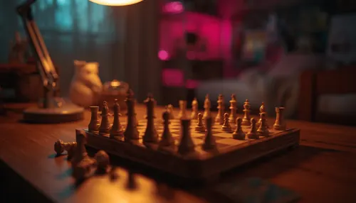
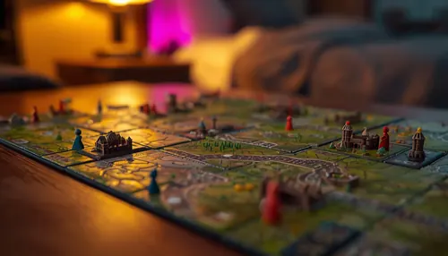
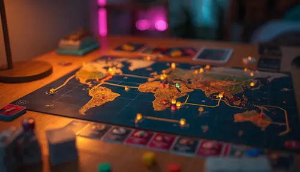
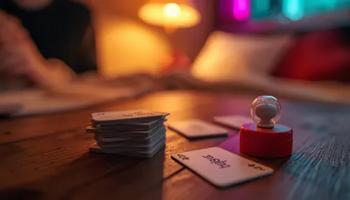
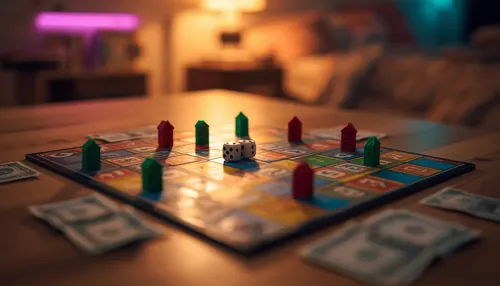
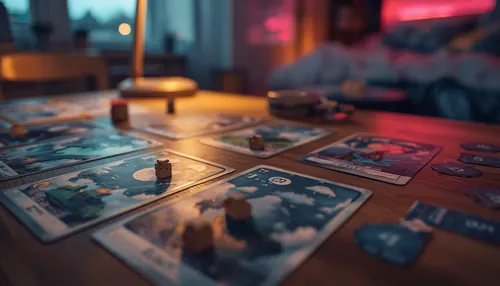
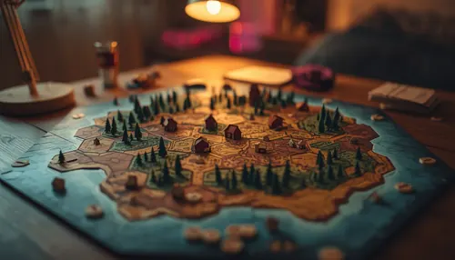
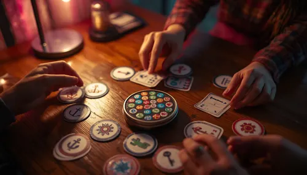
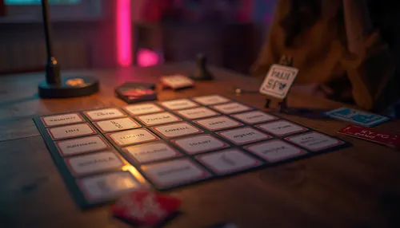

Джерела зображень та медіа
Усі зображення ігор, відео з шаховим конем і заставки створено для цього проєкту в Leonardo AI (модель Lucid Origin, формат 16:9). Стокові фото не використовуються.
Промпти зображень ігор
Кожен промпт складається з опису гри (у таблиці) і спільної частини, яка задає однаковий стиль усіх карток:
Photorealistic close-up photo of the game in progress on a wooden table in a cozy student dormitory room in the evening, warm desk-lamp light with soft neon pink and teal accent lights in the blurred background, three-quarter top-down angle, shallow depth of field, rich detail. No text, no readable letters, no logos, no brand names, no game box, no faces.
Назв ігор у промптах навмисно немає: так модель не відтворює чужі логотипи й оформлення коробок.
| Зображення | Гра | Опис у промпті |
|---|---|---|
 |
Шахи | A classic wooden chess set mid-game on a chessboard, a few captured pieces lying beside the board. |
 |
Каркассон | A tile-laying medieval landscape board game: square tiles forming roads, small walled cities and green fields, small colorful wooden meeple figures standing on the tiles. |
 |
Пандемія | A cooperative strategy board game: a world map board with glowing city points connected by lines, small colored disease cubes, colored pawns and neat stacks of cards. |
 |
Табу | A party word-guessing card game: a stack of cards with illegible tiny print, a small sand timer and a red squeeze buzzer on the table. |
 |
Монополія | A property-trading board game: a square board with colored property spaces along the edges, small green plastic houses and red hotels, two white dice and play money with no readable print. |
 |
Діксіт | A storytelling card game: large cards with dreamlike surreal original illustrations (floating islands, a giant moon, a key in the clouds), small wooden rabbit-shaped score tokens on a scoring track. |
 |
Катан | A hexagon-tile settlement board game: an island made of hex tiles (forest, wheat fields, clay hills, mountains, pasture), small wooden roads, houses and round number tokens. |
 |
Доббл | A fast pattern-matching party game: round cards each covered with many small colorful symbols (anchor, snowflake, cactus, sun, key), a round tin box and hands reaching for the cards. |
 |
Коднеймс | A team word-spy party game: a 5x5 grid of word cards with illegible print, red and blue agent cards and a small stand holding a key card. |
Вбудовані медіа на головній
- Відео з шаховим конем у Hero (темна й світла версії) — згенеровано в Leonardo AI.
- Відео «Топ-5 настільних ігор бестселерів» — YouTube-канал «Компашка».
- Віджет «Задача дня» — Lichess.org.
- Карта — Google Maps.
- Іконки — Font Awesome Free (CC BY 4.0 / SIL OFL 1.1).